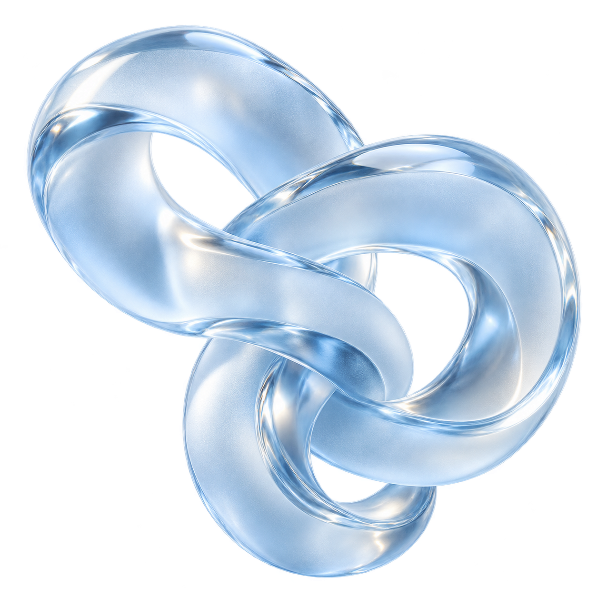

01DEVELOPER TOOL
Repo Atlas
See the shape
of your code.
A local-first dependency explorer for JavaScript and TypeScript. Find circular imports and make sense of your architecture.
I explore AI, build developer tools, and turn
everyday curiosity into useful software.

A collection of experiments, useful tools,
and things learned along the way.
See the shape
of your code.
A local-first dependency explorer for JavaScript and TypeScript. Find circular imports and make sense of your architecture.
Your repository, in motion. Play back commits, explore an evolving file tree, and see how the pieces came together.
I like understanding how things work.
Then figuring out what I can build with them.
My interests sit somewhere between AI, developer tools, and the web. This portfolio brings together the projects I share, the ideas I explore, and the things I’m still learning.
I care about the details: a clear interface, a useful abstraction, and software that feels good to use.
Start with a real question. Choose the tools that help answer it.
Build something small, see what happens, and keep learning.
The source code is part of the story. So is how you got there.
A few concepts worth slowing down for.
Retrieval-Augmented Generation adds a search step before generating an answer. A typical system splits documents into passages, indexes them, retrieves relevant passages, and includes them in the model’s context.
The model is only part of the picture. Chunking, retrieval quality, and source verification all affect the result. Reference material helps, but it does not guarantee a correct answer.
Local-first tools prioritize storing data and performing core operations on your device. This can reduce latency and keep software useful when the network is unreliable.
Storage, backups, and synchronization across devices still need careful design. The approach fits many repository analysis tools, but its trade-offs depend on the product.
Read about local-first software ↗Each module becomes a node, and each import becomes a directed edge. A dependency graph reveals widely used modules, closely connected clusters, and cycles that are hard to spot by reading files individually.
Static graphs have limits: dynamic imports and runtime configuration can leave parts of the picture incomplete. Interpret the graph in the context of the project rather than relying on connection counts alone.
Explore Repo Atlas ↗Have an idea, a question, or something interesting to share?
Find me on GitHub